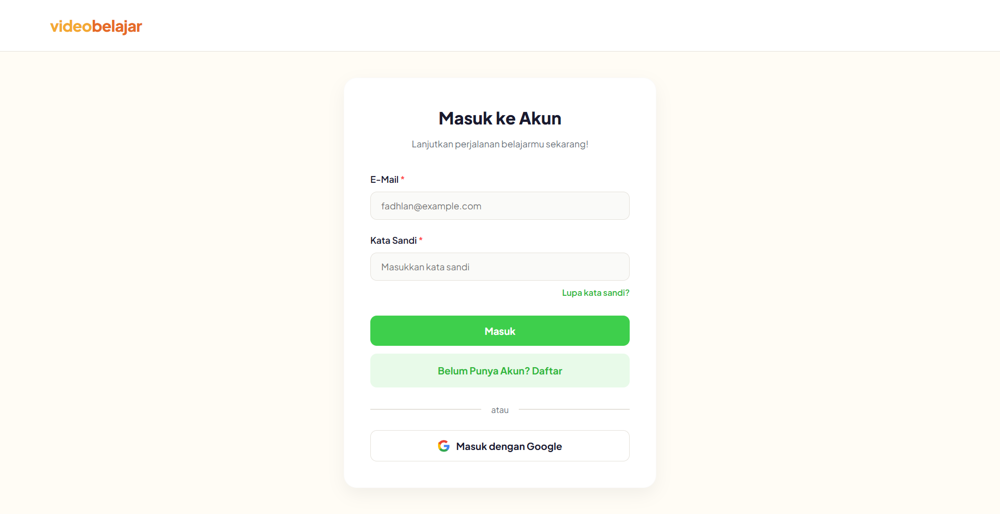
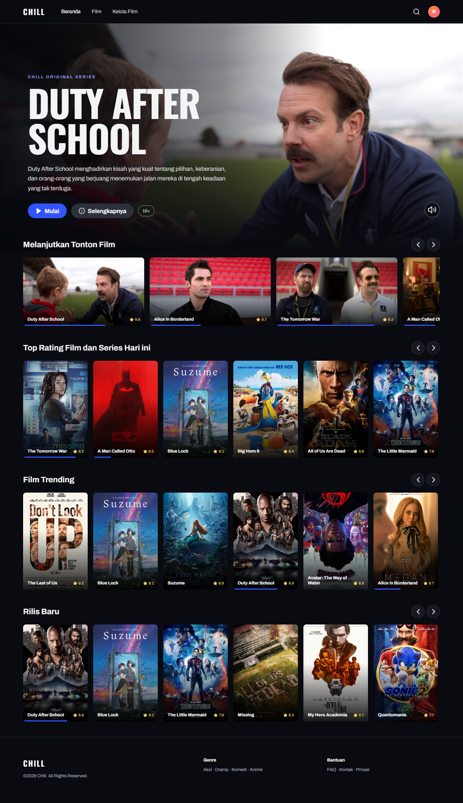
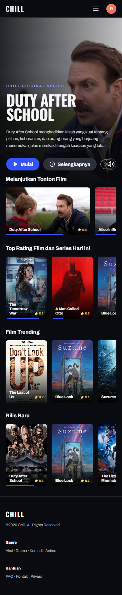

FULL-STACK DEVELOPMENT
BELAJAR
LEWAT
TUGAS.
Dokumentasi proses belajar dari Git, frontend, database, hingga backend.
PROFILE / 01FADLAN KHALQISWIPE →
FULL-STACK DEVELOPMENT
Dokumentasi proses belajar dari Git, frontend, database, hingga backend.
07
SATU PROGRES
Setiap tugas membantu saya memahami satu bagian dari proses membuat aplikasi web—dimulai dari fondasi, lalu berkembang menuju aplikasi full-stack.
PROBLEM SOLVING
Menganalisis dua perubahan pada baris yang sama, membaca conflict marker, menentukan hasil penggabungan, lalu memeriksa riwayat commit.
$ git merge feature/search CONFLICT index.html <<<<<<< HEAD <h1>Beranda</h1> ======= <h1>Cari Kelas</h1> >>>>>>> feature/search $ git add . && git commit
RESPONSIVE UI
Membangun halaman login, registrasi, dan beranda VideoBelajar dengan struktur yang rapi serta tampilan yang menyesuaikan ukuran layar.

INTERACTIVE APP
TaskFlow menjadi latihan mengelola tugas, prioritas, pencarian, status, notifikasi, dan penyimpanan data di browser.
DOM → event → state → localStorageRELATIONAL DESIGN
Merancang database EduCourse untuk pengguna, tutor, kelas, modul, pembayaran, progres belajar, dan ulasan.
BACKEND FUNDAMENTALS
Menghubungkan EduCourse dengan Express dan membuat endpoint CRUD untuk mengelola data course.
/courseLIST/courseCREATE/course/:idUPDATE/course/:idDELETE
API INTEGRATION
Membangun katalog film React dan menghubungkannya dengan MockAPI untuk operasi CRUD, pencarian, dan filter genre.


AUTHENTICATION
Melanjutkan Course API dengan register, login, JWT, verifikasi email, pencarian, sorting, dan upload gambar.
/register201password → bcrypt.hash()email → verification_token/login200credentials → JWT access token/upload201PROSES BELAJAR
Portfolio ini bukan kumpulan hasil yang sempurna. Ini adalah catatan perkembangan saya dalam memahami bagaimana sebuah aplikasi web dibangun dari tampilan hingga backend.